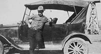

TEXAS TOURING TS MODEL T CLUB
The Texas Touring Ts Model T Club was organized to bring together Model T enthusiasts to plan and participate in club activities, learn about car maintenance, and enjoy fellowship with others. This organization places an emphasis on touring and the enjoyment of driving these wonderful cars.
LET'S DRIVE
It usually starts with the ring of a phone. The caller asks, "Are you ready for a drive?" Club members check the oil and water, lubricate the necessary parts, and gas up the Model T. Then it's time to take off.
When traveling the back roads at 35 miles per hour, it's easy to enjoy the features of the landscape that would never be recognized if passing through in a modern car at higher speeds. There is nothing like driving a Model T with friends and then dining outside under giant oak trees or eating a great meal in a cozy country cafe.
MEETINGS and DUES
Since our focus is on driving Model Ts, our meetings are in the form of tours, outings, or gatherings. The group will gather a minimum of four times per year and members will receive notices via e-mail.
Annual dues are $10 per family. More information about dues is located on the Join Us page.
KEEP IT RUNNING

Model T maintenance tips are available to help keep your car on the road.
Read more about . . .
Model T Maintenance
JOIN US
Join the Texas Touring Ts and enjoy driving your car with other Model T owners.
Read more about . . .
Joining Texas Touring Ts
THIS 'n THAT
You can find useful links, previous newsletters . . . just a little bit of everything.
Read more about . . .
Model T Information
CONTACT
Contact information and a Google map of the area are provided.
Read more about . . .
Our Contact Information
Who are the People in the Photos Above?
They are . . .
Read more
Special Tips as to How to Prevent Your Baby's Cold from Getting Worse
When your baby has a cold, it is essential to make him feel good, because chances are he will be feeling lousy. Cuddle with him, and wipe around his nose with soft tissue, or a damp one, if you can tell it is hurting him. Give him lots of kisses, and sympathize with him every step of the way.
Another significant point to understand is that a baby can be sick from one virus for a few days to a week and then get sick again from another virus. Even though your baby may have gotten his flu shot, he can still get hit by the flu.
It is our job as the parents to help our little baby survive any virus or bacteria that comes his way. Our poor little baby has no way of telling us whether he has a sore throat or a fever, we just have to figure what we can out for ourselves, or take him to the pediatrician.
Most pediatricians will tell you to wait out a cold, even though your baby may have the "Rotavirus." "Rotavirus is an extremely common and highly contagious stomach virus, and it can be serious. It causes an illness of the stomach and intestines called gastroenteritis." (Merck & Co. Inc., 2008)
It is essential to keep the baby well hydrated at all times when he is going through a cold. Also, there are other methods to help your baby, which I will explain.
We all know the idea of mind over matter works, so use this for your baby too. In order to condition your baby so that he forgets about how sick he is, you should be extra nice to him. While he is suffering, you must pamper him so that he feels your love in his time of need. To prevent your baby's cold from getting worse, follow the next steps diligently.
The steps we must take to help our baby get better are the following:
(1) Be sure your baby is wearing a dry bib at all times. Babies who are teething, drool, and this drool can get them wet and make their cold worse.
(2) Keep your baby warm. The cold virus thrives in cold temperatures, so keep the home warm and keep your baby well-clothed.
(3) If your baby sweats, change him out of the clothes, wipe him down with a warm towel and put him in some new warm clothes.
(4) Apply cornstarch baby powder on him after a bath or wipe down, so it will absorb the moisture on his body.
(5) Dress your baby in fabrics that breathe.
(6) Feed your baby foods that are high in vitamin C, and which will strengthen his immune system.
(7) Use the cold humidifier to help clean the air he breathes.
(8) Try to keep your baby away from other sick people in your family or out.
(9) If your baby is not able to keep food down or has a really high fever, it is time to see the pediatrician.
10) If your baby seems weak, you may need to hospitalize him for an "IV", so make an appointment with the pediatrician. (Merck & Co. Inc., 2008)
By following these ten steps carefully, your baby will be better in no time. Just remember that a healthy baby is a happy baby, and a happy baby makes a parent happy. Hope your baby feels better!
WHERE WE TRAVEL
Our focus is the enjoyment of riding in Model Ts and getting together with other Model T owners. We enjoy riding around the local area, to communities surrounding the Brazos Valley, to areas in different parts of Texas, and to other very special trips outside of Texas.
Hop in your Model T and join
the TEXAS TOURING Ts
for lots of FUN,
CAMARADERIE,
and ADVENTURE.
MODEL T FORD CLUB OF AMERICA
The Texas Touring Ts is a chapter of the Model T Ford Club of America, and we follow the by-laws for local clubs. With chapters located all over the world, the purpose of the Model T Ford Club of America is to provide fellowship and exciting activities for its members. Take a look at their calendar to see the travel opportunities that have been planned throughout the year.
For those living in the United States, dues for the Model T Ford Club of America are $29.00 per year, and your membership includes six issues of The Vintage Ford magazine. To join, send your payment to The Model T Ford Club of America; P. O. Box 126; Centerville, IN 47330-0126. You can also complete an on-line application.
Texas Touring Ts
 E-mail:admin@TexasTouringTs.com
E-mail:admin@TexasTouringTs.com